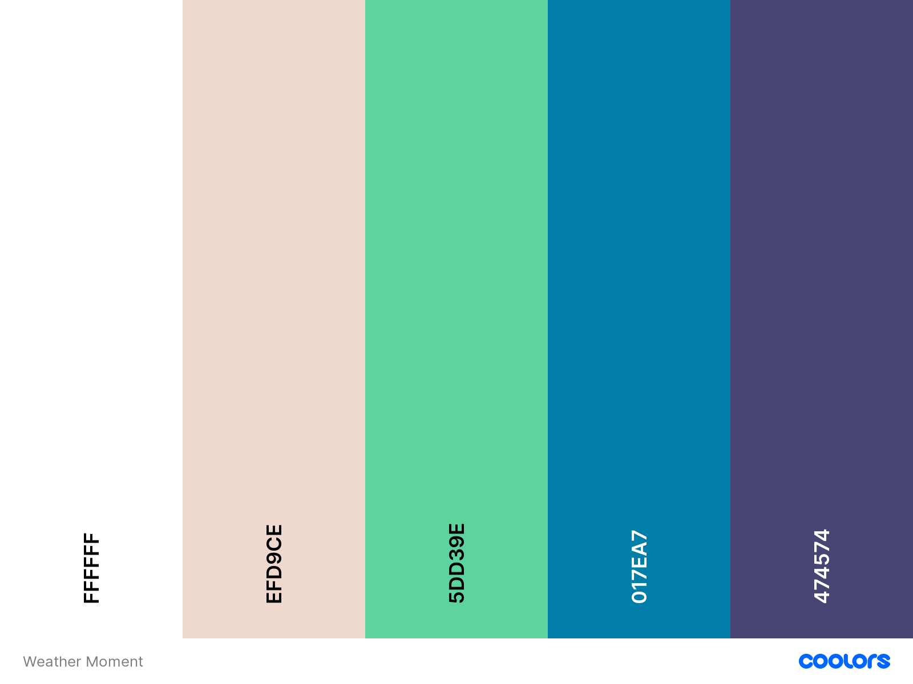

Color Scheme
Here are the colors that will be used throughout the Weather Moment site.
Our deepest color, Purple Navy #474574, will appear as the background in our header and footer, as well as the text color for main body text.
White, #FFFFFF, will appear as the text color on deep backgrounds as well as the background color for paragraphs. It will also be the text color for the majority of the header and footer.
Champagne Pink, #EFD9CE, will be the background color found in our margins and behind any subtle accent areas. It is also the text color for our "last updated" info in the footer and any other subtle areas on our dark background.
CG Blue, #017EA7, is an accent background color, used primarily in our main nav menu to give it some distinction from our main header section.
Medium Aquamarine, #5DD39E, is a brighter accent color that will be used as needed for areas that need extra attention, or as a border color for various elements.